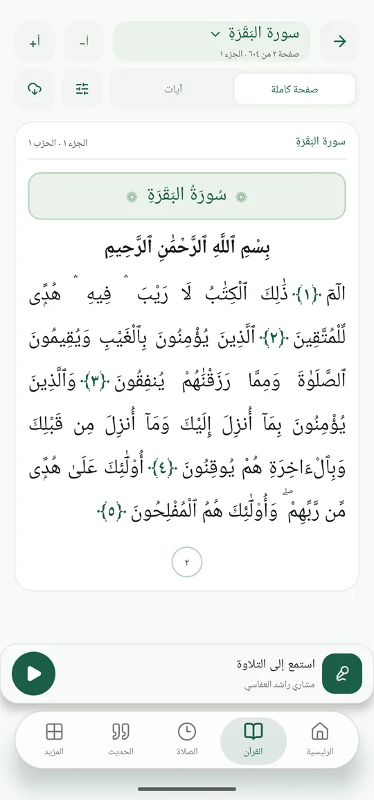
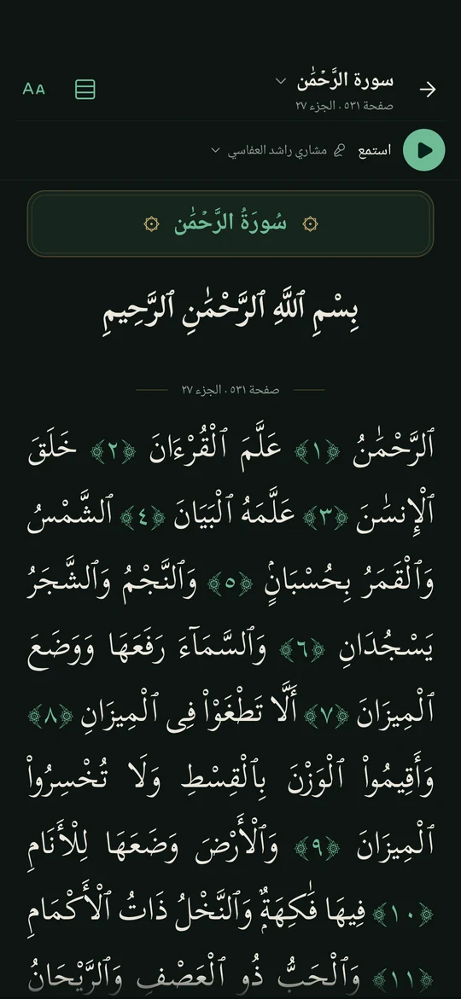
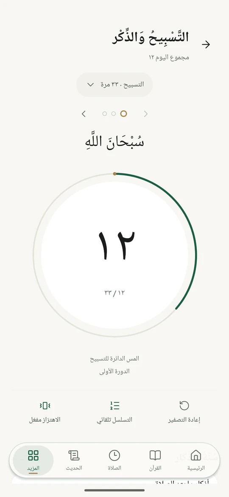

رفيق إسلامي هادئ
القرآن والمواقيت والأذكار، بهدوء.
رفيق إسلامي هادئ وبلا إعلانات. اقرأ القرآن واستمع إليه، وتعرّف على مواقيت الصلاة واتجاه القبلة، وحافظ على أذكارك. بلا حساب، وبياناتك تبقى على جهازك.
سيتوفر التطبيق قريباً على المتجرين.

ما في نور
كل ما تحتاجه في يومك، في تطبيق واحد بلا ازدحام.
القرآن الكريم
اقرأ النص العثماني للسور الـ114 مع ترجمة إنجليزية اختيارية، وابحث في الآيات.
الاستماع والقراءة دون اتصال
استمع إلى التلاوة آية بآية بصوت القارئ الذي تختار. نزِّل نص القرآن والتفسير والتلاوات التي تريد، ثم اقرأ واستمع دون اتصال.
المواقيت والقبلة
مواقيت تُحسب على جهازك بحسب موقعك أو مدينة تختارها، مع اختيار طريقة الحساب ومذهب العصر، وتنبيهات اختيارية لكل صلاة. وبوصلة تشير إلى اتجاه القبلة باستخدام موقعك ومستشعرات هاتفك.
الأذكار والمسبحة
أذكار الصباح والمساء وبعد الصلاة مع مصادرها، ومسبحة رقمية تنتقل تلقائياً إلى الذكر التالي.
الحديث
الأربعون النووية مع شرحها، إضافةً إلى صحيحي البخاري ومسلم. احفظ الأحاديث لتعود إليها.
- اقرأ سياسة الخصوصية
الخصوصية أولاً
لا حساب، ولا إعلانات، ولا تتبّع.
صُمِّم ليكون هادئاً
- مظهر فاتح أو داكن
- واجهة عربية من اليمين إلى اليسار
- أرقام عربية أو غربية
- العلامات المرجعية وموضع القراءة محفوظان على جهازك
نظرة على التطبيق
مرّر أفقياً للتنقل بين الشاشات.
- فاتحداكن

اقرأ القرآن واستمع إليه - فاتحداكن

مواقيت الصلاة على جهازك 
اتجاه القبلة بالبوصلة 
مسبحة رقمية هادئة 
أذكار الصباح والمساء 
فاتح أو داكن، كما تحب
الخصوصية
الخصوصية بالتصميم
لا حساب، ولا إعلانات، ولا تتبّع. بياناتك تبقى على جهازك.
اقرأ سياسة الخصوصيةبلا حساب
لا تسجيل دخول ولا بريد إلكتروني. افتح التطبيق واستخدمه.
بلا إعلانات ولا تتبّع
لا أدوات تحليلات ولا إعلانات ولا خادم خاص بالتطبيق.
الموقع على جهازك
يُستخدم موقعك لحساب المواقيت والقبلة على جهازك فقط، ويمكنك بدلاً منه اختيار مدينة.
إشعارات محلية
تذكيرات الصلاة تُجدول على جهازك ولا يوجد خادم إشعارات.
أسئلة شائعة
هل أحتاج إلى حساب؟
لا. نور بلا حسابات ولا تسجيل دخول. افتحه واستخدمه.
هل يعمل نور دون اتصال بالإنترنت؟
جزئياً. يُجلب نص القرآن والتفسير والتلاوات من خدمات عامة أول مرة تستخدمها. ومن المزيد ← المحتوى دون اتصال يمكنك تنزيلها ثم القراءة والاستماع دون اتصال. أما مواقيت الصلاة وبوصلة القبلة والمسبحة والعلامات المرجعية فتعمل دون إنترنت.
هل قد تختلف المواقيت عن مسجدي؟
تُحسب المواقيت على جهازك من موقعك والتاريخ، ويمكنك اختيار طريقة الحساب ومذهب العصر. وقد تختلف دقائق عن جدول مسجدك المحلي، فيُرجى التأكد منه.
رفضت إذن الموقع. هل أحصل على المواقيت؟
نعم. في تبويب الصلاة اختر مدينة من القائمة أو ابحث عن واحدة، وسيحسب نور المواقيت دون إذن الموقع.
ما البيانات التي يجمعها نور عني؟
المطوِّر لا يستلم بياناتك الشخصية ولا يخزّنها ولا يبيعها. لا حسابات ولا إعلانات ولا تحليلات، والعلامات المرجعية والإعدادات تبقى على جهازك. التفاصيل الكاملة في سياسة الخصوصية.
المزيد من الإجابات في صفحة الدعم
تنبيه
قد تختلف مواقيت الصلاة دقائق عن جدول مسجدك المحلي، فيُرجى التأكد منه. ودقة بوصلة القبلة تعتمد على معايرة مستشعر هاتفك. ويُرجى التحقق من الأحكام ودرجات الأحاديث مع أهل العلم.
المصادر والتراخيص مذكورة داخل التطبيق: المزيد ← المصادر والشكر.
ابدأ يومك بهدوء
نور على هاتفك: القرآن والمواقيت والأذكار في مكان واحد. سيتوفر التطبيق قريباً على المتجرين.